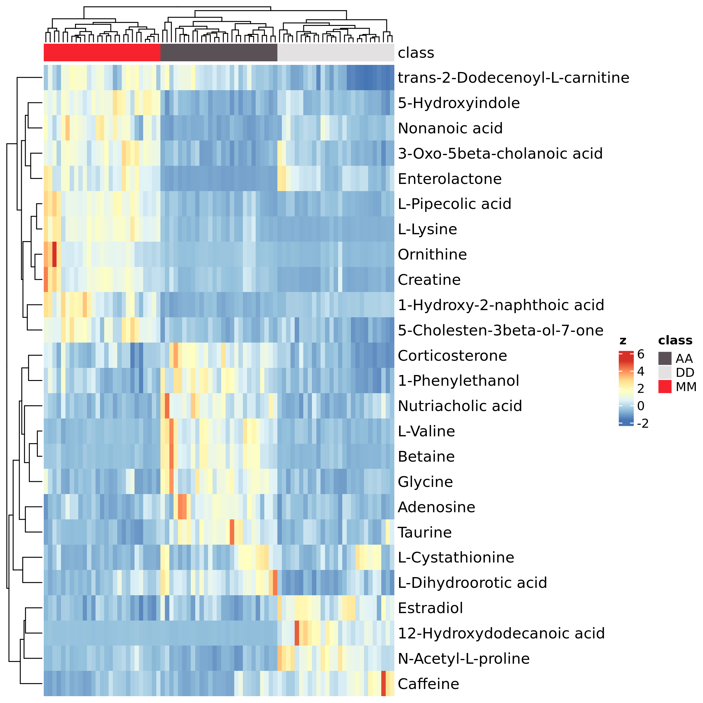

MargheRita: an R package for LC-MS/MS SWATH metabolomics data analysis and confident metabolite identification based on a spectral library of reference standards
margheRita.Rmd
Introduction
Untargeted metabolomics allows acquisition of thousands metabolite signals in a single sample that demands computational techniques for post-acquisition steps. Web-based data processing solutions as well as R packages exist and provide tools for metabolomics data analysis. Frequently these tools cover only a part of the entire workflow thus requiring the use of different platforms. Moreover, despite the existence of several databases, metabolite identification remains the bottleneck in metabolomics due to the high variability in the fragmentation pattern resulting from different mass spectrometer configuration-based libraries.
margheRita covers the whole data analysis workflow in LC-MS/MS untargeted metabolomics experiments, using MS and MS/MS (even SWATH) data. It takes in input the results of data extraction generated by MS-Dial (Tsugawa et al. 2015) and metadata for sample processing (in text or Excel format).
The package provides:
- a series of pre-processing functions (quality control, filtering and normalization) with a particular focus on methods specifically recommended for metabolomic profiles, such as filtering by mass defects, filtering by coefficient of variation (samples vs QCs) and probabilistic quotient normalization;
- metabolite annotation up to level-1, based on in-house spectral libraries as well as freely available libraries;
- spectral libraries that covers 4 different chromatographic column types: RP-C18, HILIC, RP-C8 and pZIC-HILIC Zwitterionic.
- simplified execution of parametric and non-parametric statistical tests over a large number of features;
- pathway analysis based on ORA and MSEA over various databases.
Contacts:
- Annapaola Andolfo, Proteomics and Metabolomcis Facility, HSR
- Ettore Mosca, Bioinformatics Lab, CNR-ITB
Installation
The package requires a series of other R packages, which are availble in CRAN, Bioconductor orgithub. In most of the cases, the following instructions guarantee that all such dependencies are installed:
install.packages("devtools")
devtools::install_github(c("pcastellanoescuder/POMA", "antonvsdata/notame"))
if (!require("BiocManager", quietly = TRUE)){
install.packages("BiocManager")
}
BiocManager::install(c("clusterProfiler", "pcaMethods"))
devtools::install_github("emosca-cnr/margheRita", dependencies = T)Input data
margheRita is intended to be used after having done a number of data acquisition steps through MS-Dial (Tsugawa et al. 2015). It requires two text files in tab-delimited format:
- feature data file, which must include feature identifiers, m/z values, retention times, MS/MS spectra and feature abundances across samples; usually, this file is generated by MS-Dial;
- sample annotation file, which must include the following mandatory columns: “id”, “injection_order”, “batch”, “class”, “biological_rep” and “technical_rep”.
Usingh such two files, the function read_input_file()
creates the “mRList” object, which is used by most of the margheRita
functions as main input/output:
mL <- read_input_file(feature_file = "MS-Dial_file.txt", sample_file = "sample_info.txt")Please, also consider that, to properly split QC samples, you must indicate exactly “QC” as class of a sample in the sample_file.
The initial mRList object contains the following elements:
| Element of the mRList | Description |
|---|---|
| data | matrix containing metabolite abundances |
| metab_ann | metabolite annotation |
| sample_ann | sample annotation |
| QC | matrix containing metabolite abundances of QC samples |
| QC_ann | annotation of QC samples |
## x014_UR_norm_DD_mealC_t07_rtech1_RP_short_SWATH_pos
## F248 294.9630
## F260 299.8641
## F338 355.7661
## F506 108.1681
## F507 462.1838
## F511 52674.7600
## x015_UR_norm_MM_mealB_t00_rtech1_RP_short_SWATH_pos
## F248 307.2657
## F260 350.1306
## F338 332.5398
## F506 141.9220
## F507 466.3308
## F511 79656.2100
## x016_UR_norm_AA_mealA_t00_rtech1_RP_short_SWATH_pos
## F248 157.4713
## F260 663.3356
## F338 457.2227
## F506 314.8479
## F507 810.1950
## F511 24772.5900## Feature_ID MSDialName
## F248 F248 Unknown
## F260 F260 Unknown
## F338 F338 Unknown
## F506 F506 Unknown
## F507 F507 Unknown
## F511 F511 Trimethylamine N-oxide; CE30; UYPYRKYUKCHHIB-UHFFFAOYSA-N
## MSDialSMILES rt mz
## F248 null 0.890 61.63427
## F260 null 0.944 61.70882
## F338 null 3.677 67.05233
## F506 null 1.260 76.03783
## F507 null 0.868 76.03820
## F511 CN(=O)(C)C 0.888 76.07437## id
## x014_UR_norm_DD_mealC_t07_rtech1_RP_short_SWATH_pos x014_UR_norm_DD_mealC_t07_rtech1_RP_short_SWATH_pos
## x015_UR_norm_MM_mealB_t00_rtech1_RP_short_SWATH_pos x015_UR_norm_MM_mealB_t00_rtech1_RP_short_SWATH_pos
## x016_UR_norm_AA_mealA_t00_rtech1_RP_short_SWATH_pos x016_UR_norm_AA_mealA_t00_rtech1_RP_short_SWATH_pos
## x017_UR_norm_AA_mealC_t01_rtech1_RP_short_SWATH_pos x017_UR_norm_AA_mealC_t01_rtech1_RP_short_SWATH_pos
## x018_UR_norm_DD_mealA_t06_rtech1_RP_short_SWATH_pos x018_UR_norm_DD_mealA_t06_rtech1_RP_short_SWATH_pos
## x019_UR_norm_MM_mealC_t08_rtech1_RP_short_SWATH_pos x019_UR_norm_MM_mealC_t08_rtech1_RP_short_SWATH_pos
## injection_order batch class
## x014_UR_norm_DD_mealC_t07_rtech1_RP_short_SWATH_pos 14 1 DD
## x015_UR_norm_MM_mealB_t00_rtech1_RP_short_SWATH_pos 15 1 MM
## x016_UR_norm_AA_mealA_t00_rtech1_RP_short_SWATH_pos 16 1 AA
## x017_UR_norm_AA_mealC_t01_rtech1_RP_short_SWATH_pos 17 1 AA
## x018_UR_norm_DD_mealA_t06_rtech1_RP_short_SWATH_pos 18 1 DD
## x019_UR_norm_MM_mealC_t08_rtech1_RP_short_SWATH_pos 19 1 MM
## technical_rep
## x014_UR_norm_DD_mealC_t07_rtech1_RP_short_SWATH_pos 1
## x015_UR_norm_MM_mealB_t00_rtech1_RP_short_SWATH_pos 1
## x016_UR_norm_AA_mealA_t00_rtech1_RP_short_SWATH_pos 1
## x017_UR_norm_AA_mealC_t01_rtech1_RP_short_SWATH_pos 1
## x018_UR_norm_DD_mealA_t06_rtech1_RP_short_SWATH_pos 1
## x019_UR_norm_MM_mealC_t08_rtech1_RP_short_SWATH_pos 1
## biological_rep
## x014_UR_norm_DD_mealC_t07_rtech1_RP_short_SWATH_pos mealC_t07
## x015_UR_norm_MM_mealB_t00_rtech1_RP_short_SWATH_pos mealB_t00
## x016_UR_norm_AA_mealA_t00_rtech1_RP_short_SWATH_pos mealA_t00
## x017_UR_norm_AA_mealC_t01_rtech1_RP_short_SWATH_pos mealC_t01
## x018_UR_norm_DD_mealA_t06_rtech1_RP_short_SWATH_pos mealA_t06
## x019_UR_norm_MM_mealC_t08_rtech1_RP_short_SWATH_pos mealC_t08
## subj_meal_time meal time
## x014_UR_norm_DD_mealC_t07_rtech1_RP_short_SWATH_pos DD_mealC_t07 mealC t07
## x015_UR_norm_MM_mealB_t00_rtech1_RP_short_SWATH_pos MM_mealB_t00 mealB t00
## x016_UR_norm_AA_mealA_t00_rtech1_RP_short_SWATH_pos AA_mealA_t00 mealA t00
## x017_UR_norm_AA_mealC_t01_rtech1_RP_short_SWATH_pos AA_mealC_t01 mealC t01
## x018_UR_norm_DD_mealA_t06_rtech1_RP_short_SWATH_pos DD_mealA_t06 mealA t06
## x019_UR_norm_MM_mealC_t08_rtech1_RP_short_SWATH_pos MM_mealC_t08 mealC t08
## subj_meal
## x014_UR_norm_DD_mealC_t07_rtech1_RP_short_SWATH_pos DD_mealC
## x015_UR_norm_MM_mealB_t00_rtech1_RP_short_SWATH_pos MM_mealB
## x016_UR_norm_AA_mealA_t00_rtech1_RP_short_SWATH_pos AA_mealA
## x017_UR_norm_AA_mealC_t01_rtech1_RP_short_SWATH_pos AA_mealC
## x018_UR_norm_DD_mealA_t06_rtech1_RP_short_SWATH_pos DD_mealA
## x019_UR_norm_MM_mealC_t08_rtech1_RP_short_SWATH_pos MM_mealC## x024_QC_norm_06_RP_short_SWATH_pos x048_QC_norm_10_RP_short_SWATH_pos
## F248 89.55031 137.85050
## F260 225.45610 134.20190
## F338 303.82490 180.66890
## F506 163.48670 91.28957
## F507 412.40590 187.70180
## F511 39594.32000 22377.21000
## x072_QC_norm_14_RP_short_SWATH_pos
## F248 142.8374
## F260 153.3819
## F338 172.7377
## F506 140.5623
## F507 408.4307
## F511 26902.7900## id
## x024_QC_norm_06_RP_short_SWATH_pos x024_QC_norm_06_RP_short_SWATH_pos
## x048_QC_norm_10_RP_short_SWATH_pos x048_QC_norm_10_RP_short_SWATH_pos
## x072_QC_norm_14_RP_short_SWATH_pos x072_QC_norm_14_RP_short_SWATH_pos
## x119_QC_norm_21_RP_short_SWATH_pos x119_QC_norm_21_RP_short_SWATH_pos
## x191_QC_norm_33_RP_short_SWATH_pos x191_QC_norm_33_RP_short_SWATH_pos
## x204_QC_norm_36_RP_short_SWATH_pos x204_QC_norm_36_RP_short_SWATH_pos
## injection_order batch class technical_rep
## x024_QC_norm_06_RP_short_SWATH_pos 24 1 QC 6
## x048_QC_norm_10_RP_short_SWATH_pos 48 1 QC 10
## x072_QC_norm_14_RP_short_SWATH_pos 72 1 QC 14
## x119_QC_norm_21_RP_short_SWATH_pos 119 1 QC 21
## x191_QC_norm_33_RP_short_SWATH_pos 191 1 QC 33
## x204_QC_norm_36_RP_short_SWATH_pos 204 2 QC 36
## biological_rep subj_meal_time meal time
## x024_QC_norm_06_RP_short_SWATH_pos QC QC_QC QC QC
## x048_QC_norm_10_RP_short_SWATH_pos QC QC_QC QC QC
## x072_QC_norm_14_RP_short_SWATH_pos QC QC_QC QC QC
## x119_QC_norm_21_RP_short_SWATH_pos QC QC_QC QC QC
## x191_QC_norm_33_RP_short_SWATH_pos QC QC_QC QC QC
## x204_QC_norm_36_RP_short_SWATH_pos QC QC_QC QC QC
## subj_meal
## x024_QC_norm_06_RP_short_SWATH_pos QC_QC
## x048_QC_norm_10_RP_short_SWATH_pos QC_QC
## x072_QC_norm_14_RP_short_SWATH_pos QC_QC
## x119_QC_norm_21_RP_short_SWATH_pos QC_QC
## x191_QC_norm_33_RP_short_SWATH_pos QC_QC
## x204_QC_norm_36_RP_short_SWATH_pos QC_QCInter-operability
To support interoperability with other packages with a focus on metabolomics, the margheRitaList can be reorganized as a “MetaboSet” object, used by package “notame” (Klåvus et al. 2020):
ms <- as.metaboset(mRList)## MetaboSet object with 290 features and 253 samples.
## 10 QC samples included
## 290 non-flagged features, 0 flagged features.
##
## class:
## DD: 81, MM: 81, AA: 81, QC: 10
##
## The object has the following parts (splits):
## FALSE: featuresor as “PomaSummarizedExperiment” object, used by package “POMA” (Castellano-Escuder et al. 2021):
se <- as.PomaSummarizedExperiment(mRList)## class: SummarizedExperiment
## dim: 290 253
## metadata(0):
## assays(1): ''
## rownames(290): F338 F506 ... F41874 F42145
## rowData names(0):
## colnames(253): x014_UR_norm_DD_mealC_t07_rtech1_RP_short_SWATH_pos
## x015_UR_norm_MM_mealB_t00_rtech1_RP_short_SWATH_pos ...
## x286_QC_norm_49_RP_short_SWATH_pos x295_QC_norm_51_RP_short_SWATH_pos
## colData names(10): class biological_rep ... injection_order
## technical_repFiltering, imputation and normalization
The function filtering() runs filters to exclude
features/sample with many missing values, features with wrong m/z values
and, lastly, performs imputation of missing values:
mL <- filtering(mL)These three steps can be called independently through the function
filter_NA(), m_z_filtering() and
imputation(), respectively. In particular,
m_z_filtering() remove features with m/z that have decimal
value within [4, 8] (by default), while the imputation is performed
replacing NA values with a random number, calculated between 10%-25% of
the minimum value of the feature.
The function heatscatter_chromatography() creates a
graphic overview of the mz and rt values in the dataset:

margheRita provides three ways for normalizing metabolite profiles:
- “log”, the log2 of metabolite abundances;
- “reference”, every sample is divided by a reference value;
- “pqn”, probabilistic quotient normalization (Dieterle et al. 2006);
For “reference” and “pqn” methods, the column reference
must be present in mRList$metab_ann. If missing, the
function calc_reference() sets up such column using average
metabolite values and medians of QC samples. For example, here’s a call
to normalize_profiles() using pqn:
mL_norm <- normalize_profiles(mL, method = "pqn")The comparison of the coefficient of variation of a metabolite in relation to QC samples provides a means to exclude low quality features. In particular, only features that have a CV ratio between no-QC samples and QC sample higher than a given threshold (by default 1) are kept:
mL_norm <- CV_ratio(mRList = mL_norm)The distributions of metabolite relative log-abundances can be calculated and visualized by means of:
mL <- RLA(mRList = mL)Typically, after normalization, the various samples should have
similar distributions of relative log-abundances. 
Principal Component Analysis
margheRita performs Principal Component Analysis (PCA) using the
function mR_pca(), which relies on the package pca_methods
(Stacklies et al. 2007). Besides choosing
the scaling method (argument scaling) and number of PCs
(nPcS), it allows to include/exclude quality control
samples by means of argument include_QC:
mL_norm <- mR_pca(mRList = mL_norm, nPcs=5, scaling="uv", include_QC=FALSE)The results are added to the mRList in the element pca.
It also provides some plots, like the visualization of distribution of
loadings for all-pairs of the top 5 PCs. The plots are directly saved in
the current working directory (or in the sub directory created with the
argument dirout)
The results of
PCA can be plotted using Plot2DPCA() function. The argument
col_by enables the choice of the
mRList$sample_ann column to be used to color samples:
Plot2DPCA(mRList = mL_norm, pcx=1, pcy=2, col_by="class", include_QC=TRUE)
Removing samples and collapsing techincal replicates
It is common that the inspection of the similarity between samples
(e.g. distribution over the top PCs, RLA) rise concerns about the
quality of some samples. The function remove_samples()
allows the user to remove one or more samples from the
mRList. Here, for example we remove all “Blank”
samples:
mL <- remove_samples(mRList = mL, ids = "Blank", column = "class")In this case, the function removes all samples with value “Blank” in the column “class” of sample annotation.
The definition of mean metabolite abundance for every biological
replicate is performed by means of collapse_tech_rep()
function:
mL_norm_bio <- collapse_tech_rep(mRList = mL_norm)## AA_mealA_t00 AA_mealA_t01 AA_mealA_t02 AA_mealA_t03 AA_mealA_t04
## F338 293.7091 562.2148 523.8581 356.1212 757.9913
## F506 359.8439 300.3907 637.1368 323.6169 191.9161
## F513 660.1863 557.7189 571.6556 510.2219 453.0921
## F966 11301.1699 8998.2739 9584.4802 7777.3442 7946.9138
## F1016 3587.4424 2957.3787 4063.9745 2520.4270 2633.2531
## F1039 1162.8266 1273.1433 1812.5802 2206.6794 3086.8158## class_biorep class biological_rep
## AA_mealA_t00 AA_mealA_t00 AA mealA_t00
## AA_mealA_t01 AA_mealA_t01 AA mealA_t01
## AA_mealA_t02 AA_mealA_t02 AA mealA_t02
## AA_mealA_t03 AA_mealA_t03 AA mealA_t03
## AA_mealA_t04 AA_mealA_t04 AA mealA_t04
## AA_mealA_t05 AA_mealA_t05 AA mealA_t05Statistical analysis
MargheRita provides some functions to calculate mean and variability, fold changes and to test for metabolite variations.
The function mean_median_stdev_samples() calculates
mean, median and standard deviation of metabolite abundance according to
the sample classes specified in the column “class” of sample
annotation:
mean_median_stdev_samples(mL_norm_bio)The function univariate() performs dataset-wide
statistical tests (Student t-tests, Wilcoxon test, Anova and
Kruskal-Wallis test) between levels of a particular factor defined in
the sample annotation:
mL_norm_bio <- univariate(mL_norm_bio, test_method="anova", exp.levels = c("AA", "DD", "MM"), exp.factor = "class")## F p q DD-AA MM-AA
## F338 17.6282737 4.821921e-07 2.497066e-06 0.003610291 2.425930e-07
## F506 57.2151868 5.070120e-16 8.168526e-15 0.000000000 0.000000e+00
## F513 11.7011315 3.596096e-05 1.271790e-04 0.073328306 1.960049e-05
## F966 9.8629476 1.518144e-04 4.359026e-04 0.939935238 1.281721e-03
## F1016 16.8591321 8.219521e-07 4.181861e-06 0.035099636 4.686136e-03
## F1039 0.1269624 8.809485e-01 9.091639e-01 0.897133234 9.998608e-01
## MM-DD
## F338 3.137240e-02
## F506 7.838339e-01
## F513 2.905768e-02
## F966 4.121310e-04
## F1016 4.167037e-07
## F1039 9.039911e-01The function metab_boxplot() draws boxplots of feature
abundances grouped by the levels of a given factor:
metab_boxplot(mRList = mL_norm_bio, col_by="class", group="class", features = "F3957")This function allows to draw boxplot and report p-value calculated
using Student t test. The function h_map() provides
heatmaps based on package ComplexHeatmap (Gu, Eils, and Schlesner
2016):
h_map(mL_norm_bio)
Metabolite identification
Metabolite identification in margheRita is performed by means of the
function metabolite_identification(), which requires an
mRList object and a reference library with MS and MS/MS metabolite
information. The identification is possible up to level-1, provided that
the required information are available in the reference library. The
identification is based on the quantification of the following
quantities:
- retention time (RT) error: \[\epsilon_t(i) = |t(i) - t^*(i)|\]
- ppm error: \[\epsilon_m(i) = \frac{|m(i) - m^*(i)|}{m^*(i)} \cdot 10^6\]
- percent relative intensity error: \[\epsilon_{I_R}(i,j) = \frac{|I_R(i,j) - I^*(i,j)|}{I^*_R(i,j)} \cdot 100\]
Such quantities are used to score the similarity among precursors of features and metabolites, as well as their MS/MS spectra.
The function select_library() provides a means to select
any of two sources:
margheRita, which contains MS and MS/MS information for about 800 metabolites spanning several biological functions; these libraries provideup to level 1 identifications in positive and negative modalities for “HILIC”, “LipC8”, “pZIC”, “RPLong” and “RPShort” chromatographic columns, that are acquired following the methods reported in the supplementary material of Mosca et al. (manuscript in preparation).
MS-Dial, which covers a much larger set of metabolites (\(10^5\)), but is limited to level 2 identifications in positive and negative modalities.
In this example, we load the margheRita library in positive modalitity with retention times of RPShort columns and we discard all peaks with relative intensity less than 10:
mR_library <- select_library(column = "RPShort", mode = "POS", accept_RI=10)The resulting mR_library is a list that contains
information about precursors
## ID CAS Name rt mz PubChemCID
## L10 L10 485-80-3 S-(5'-Adenosyl)-L-methionine 0.80 399.14452 34756
## L14 L14 61-19-8 Adenosine monophosphate 1.40 348.07037 6083
## L17 L17 979-92-0 S-Adenosylhomocysteine 1.28 385.12887 439155
## L20 L20 56-86-0 L-Glutamic acid 0.90 148.06044 33032
## L30 L30 56-40-6 Glycine 0.85 76.03931 750
## L33 L33 56-41-7 L-Alanine 0.88 90.05496 5950
## SMILES
## L10 C[S+](CC[C@H](N)C(O)=O)C[C@H]1O[C@H]([C@H](O)[C@@H]1O)N1C=NC2=C1N=CN=C2N
## L14 NC1=NC=NC2=C1N=CN2[C@@H]1O[C@H](COP(O)(O)=O)[C@@H](O)[C@H]1O
## L17 N[C@@H](CCSC[C@H]1O[C@H]([C@H](O)[C@@H]1O)N1C=NC2=C(N)N=CN=C12)C(O)=O
## L20 N[C@@H](CCC(O)=O)C(O)=O
## L30 NCC(O)=O
## L33 C[C@H](N)C(O)=Oand MS/MS peaks
## $M1
## [,1] [,2]
## [1,] 45.03236 10.34602
## [2,] 70.02762 12.46120
## [3,] 96.00721 13.50730
## [4,] 99.04249 17.68019
## [5,] 113.03337 100.00000
## [6,] 117.05313 20.43913
##
## $M2
## [,1] [,2]
## [1,] 57.03256 11.18379
## [2,] 60.07970 58.46973
## [3,] 85.02673 100.00000
## [4,] 95.08432 12.06547
## [5,] 109.09995 11.77031
## [6,] 144.10080 38.14543
## [7,] 183.17293 27.40629
## [8,] 285.20408 26.57983
## [9,] 344.27686 33.27335
##
## $M3
## [,1] [,2]
## [1,] 55.01692 100.00000
## [2,] 56.04866 58.49046
## [3,] 70.06436 54.29821
## [4,] 98.05859 90.19182
## [5,] 116.06901 16.49188Once the library is selected, metabolite identification can be
performed by the homonymous function, where the argument
features specifies the features to be considered (all
features if it is left features=NULL, as in the following
example):
mL_norm_bio <- metabolite_identification(mL_norm_bio, library_list = mR_library)The function metabolite_identification() has a series of
parameters that can be adjusted to optimize the identification process
(see its documentation). By default, all association that met the
considered criteria are returned. When metabolite identification is
applied on a large number of features (e.g., \(10^3\)), it’s common to obtain multiple
features associated with the same metabolite and the opposite (1
feature, multiple metabolites). This redundancy can be addressed setting
filter=TRUE. In this case, the various features associated
with the same metabolite are filtered considering the classification
(Level 1, Level 2, Level 3a and Level 3b), the errors (see above) and a
series of quantitative and qualitative scores (see below and our article
for further details). The resulting associations (including full details
of the analysis) are stored in
mL_norm_bio$metabolite_identification$associations:
## Feature_ID rt mz RT_err RT_class RT_flag ppm_error mass_flag
## 553 F14798 2.931 282.1190 0.069 super TRUE 2.3543199 TRUE
## 544 F6378 1.217 182.0811 0.413 super TRUE 0.4029412 TRUE
## 137 F16399 5.698 299.1265 1.272 unacceptable FALSE 4.4438533 TRUE
## 325 F4004 1.316 148.0601 0.416 super TRUE 2.1472853 TRUE
## 590 F9130 1.708 218.1370 0.658 acceptable TRUE 7.6480152 TRUE
## mass_status ID_peaks peaks_found_ppm_RI matched_peaks_ratio
## 553 super M1758 1 1.0000000
## 544 super M1569 6 0.8571429
## 137 super M1110 5 0.7142857
## 325 super M1592 2 0.6666667
## 590 acceptable M505 2 0.6666667
## precursor_in_MSMS ID Name rt_lib mz_lib
## 553 FALSE L801 1-Methyladenosine 3.00 282.1197
## 544 FALSE L77 L-Tyrosine 1.63 182.0812
## 137 FALSE L1352 Enterolactone 6.97 299.1278
## 325 FALSE L20 L-Glutamic acid 0.90 148.0604
## 590 FALSE L906 Propionyl-L-carnitine 1.05 218.1387
## SMILES Level Level_note
## 553 CN1C=NC2=C(N=CN2[C@@H]2O[C@H](CO)[C@@H](O)[C@H]2O)C1=N 1
## 544 N[C@@H](CC1=CC=C(O)C=C1)C(O)=O 1
## 137 C1C(C(C(=O)O1)CC2=CC(=CC=C2)O)CC3=CC(=CC=C3)O 2
## 325 N[C@@H](CCC(O)=O)C(O)=O 1
## 590 CCC(=O)OC(CC([O-])=O)C[N+](C)(C)C 1A summary of the associations is available in
mL_norm_bio$metabolite_identification$associations_summary:
## Feature_ID ID Name Level Level_note
## 553 F14798 L801 1-Methyladenosine 1
## 544 F6378 L77 L-Tyrosine 1
## 137 F16399 L1352 Enterolactone 2
## 325 F4004 L20 L-Glutamic acid 1
## 590 F9130 L906 Propionyl-L-carnitine 1Lastly, the associations are used to add metabolite information to
mL_norm_bio$metab_ann (here, we omit MS/MS spectra for the
sake of brevity):
## Feature_ID MSDialName
## 1 F506 Unknown
## 2 F513 Unknown
## 3 F1016 w/o MS2:3-Hydroxypyridine; CE0; GRFNBEZIAWKNCO-UHFFFAOYSA-N
## 4 F1279 w/o MS2:1-AMINOCYCLOPROPANE-1-CARBOXYLATE
## 5 F1428 w/o MS2:L-2,3-DIAMINOPROPIONIC ACID
## 6 F1686 Unknown
## MSDialSMILES rt mz ID Name
## 1 null 1.260 76.03783 L30 Glycine
## 2 null 1.148 76.07460 L631 Trimethylamine N-oxide
## 3 c1cc(cnc1)O 1.324 96.04393 L804 2-Hydroxypyridine
## 4 NC1(CC1)C(O)=O 0.756 102.05508 L659 1-Aminocyclopropanecarboxylic acid
## 5 NCC(N)C(O)=O 6.306 105.06686 L936 2,3-Diaminopropionic acid
## 6 null 1.356 110.05829 L741 2-Aminophenol
## PubChemCID
## 1 750
## 2 1145
## 3 8871
## 4 535
## 5 97328
## 6 5801The spectra from all the features that match a metabolite can be inspected creating the following plot through:
visualize_associated_spectra(mRList = mL_norm_bio, mR_library = mR_library, metabolite_id = "L1660")
The function h_map_MSMS_comparison() draws heatmaps to
visually compare ppm errors and RI differences between feature and
metabolite spectra:
h_map_MSMS_comparison(mL_norm_bio, metab_id = "L1660", feature_id = "F10165")
Retriving statistics for identified metabolites
The results of statistical test and metabolite identification can be
merged using the function merge_stats_with_features(). The
argument feature_stats should be the name of any
statistical test saved in the mRList or a custom data frame
with Feature_ID as row names:
metab_stat <- merge_stats_with_features(mRList = mL_norm_bio, feature_stats = "anova")## Feature_ID MSDialName
## 191 F3957 Lysine; LC-ESI-QTOF; MS2; CE
## 287 F9507 w/o MS2:"NCGC00160264-01!6,7-Dimethoxy-quinazoline-2,4-diol"
## 147 F3081 w/o MS2:5-Methyl-1H-benzotriazole; LC-ESI-ITFT; MS2; CE
## 126 F2833 Pipecolic acid
## 75 F2141 Unknown
## 216 F4671 Unknown
## MSDialSMILES ID Name PubChemCID
## 191 NCCCCC(N)C(O)=O L43 L-Lysine 5962
## 287 O=C1NC(=O)C2=CC(OC)=C(OC)C=C2N1 L774 L-Cystathionine 439258
## 147 CC1=CC2=C(C=C1)N=NN2 L1839 5-Hydroxyindole 16054
## 126 O=C(O)C1NCCCC1 L377 L-Pipecolic acid 439227
## 75 null L171;L504 Betaine;L-Valine 247;6287
## 216 null L1644 N-Acetyl-L-proline 66141
## F p q DD-AA MM-AA MM-DD
## 191 206.01628 7.463065e-32 2.164289e-29 0.01168747 0.0000000 0.0000000
## 287 146.11859 4.178003e-27 6.058104e-25 0.00000000 0.9405020 0.0000000
## 147 133.75759 6.186876e-26 5.980647e-24 0.07287089 0.0000000 0.0000000
## 126 126.43314 3.351518e-25 2.429851e-23 0.83474546 0.0000000 0.0000000
## 75 86.56099 1.571034e-20 6.508571e-19 0.00000000 0.0000000 0.7251425
## 216 84.48792 3.007217e-20 1.090116e-18 0.00000000 0.0431562 0.0000000Pathway analysis
margheRita implements both Over Representation Analysis (ORA) and
Metabolite Set Enrichment Analysis (MSEA), based on clusterProfiler
(Wu et
al. 2021) over BioCyc, KEGG and Reactome pathway databases.
These analyses can be run by means of function
pathway_analysis(), which takes as input a vector of
PubChemCID or a ranked list of PubChemCID in case of ORA or MSEA
respectively:
pa_res <- pathway_analysis(metab_stat, type = "ora", universe = metab_universe)The result is a list that contains (i) a table with pathway descriptions and (ii) an object of class “enrichResult”, which can be used to obtain various visualizations through clusterProfiler functions.
## ID Description GeneRatio BgRatio
## 1270158 1270158 Metabolism of amino acids and derivatives 5/8 30/134
## 83035 83035 ABC transporters 4/8 22/134
## 790012 790012 Biosynthesis of amino acids 3/8 19/134
## 83030 83030 Aminoacyl-tRNA biosynthesis 2/8 12/134
## 172847 172847 Protein digestion and absorption 2/8 13/134
## pvalue p.adjust qvalue geneID Count
## 1270158 0.01408516 0.2242475 0.2098222 439258/439227/247/586/1123 5
## 83035 0.02491639 0.2242475 0.2098222 5962/247/1123/750 4
## 790012 0.08569958 0.5141975 0.4811205 5962/439258/750 3
## 83030 0.15212213 0.5227684 0.4891401 5962/750 2
## 172847 0.17425614 0.5227684 0.4891401 5962/750 2
See the documentation of clusterProfiler for further information.